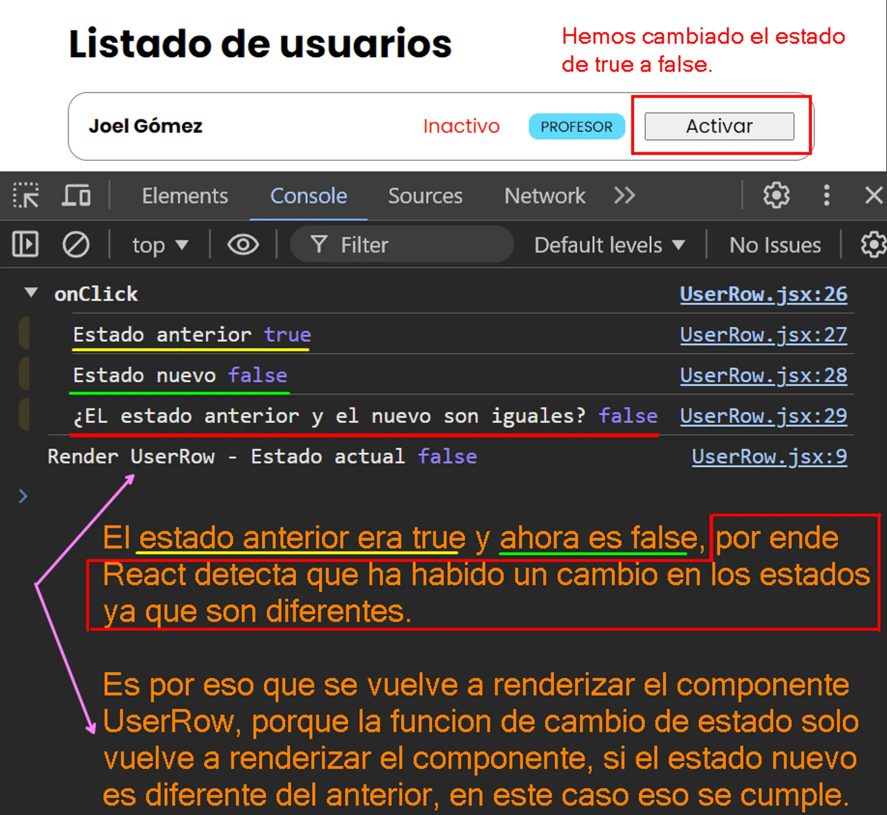

Introducción
En esta lección vamos hablar de la parte más delicada de los estados, vamos a entrar en detalle sobre lo que hace la función setActiveState.
En primer lugar partiremos de lo que ya sabemos.
-
Ejecutar la función de setear el estado implica cambiar el valor del estado.
-
Al ejecutar esta función provocamos un nuevo renderizado.
Estas dos reglas son generalizaciones que tienen sus particularidades y vamos ampliarlas un poco más.
-
En primer lugar diremos que llamar a setActiveState con un valor, implica asignar este nuevo valor al estado.
-
En segundo lugar, solo cuando el valor del estado cambia se produce un nuevo renderizado.
Estas dos definiciones son muy parecidas a las anteriores, pero tienen en cuenta una nueva premisa, podemos asignar cualquier valor a ese estado y solo si este valor es diferente del anterior se produce un nuevo renderizado.
Dicho de otra manera si hacemos un setActiveState con el mismo valor que teniamos anteriormente no ocurre absolutamente nada, no se produce este nuevo renderizado.
Tenemos que entender de forma clara, qué significa exactamente que este valor sea igual o no.
La regla básica que seguiremos en este caso es similar al utilizar el operador de igualdad estricta (===) de JavaScript.
Comprobación de cúando se renderiza el componente
Comportamiendo normal, renderizado del componente al cambiar el estado.
Ya hemos dicho que al ejecutar la función de setear el estado, se renderiza de nuevo el componente siempre y cuando el valor del estado nuevo(actual) sea diferente al valor del estado anterior.
Ahora miraremos cúando es que se renderiza el componente, porque hay una situación donde esta función de seteo, renderiza el componente aunque su valor del estado anterior con el actual sean iguales.
Nos apoyaremos en el console.log para mirar cúando se renderiza el componente.
Si vemos la pantalla miraremos el primer renderizado con sus estados con su valor inicial.
Y si damos click a un botón estaremos cambiando el valor del estado y por eso es que renderiza de nuevo el componente.
Esto es el comportamiendo normal que ya conocemos, ya que estamos cambiando el valor del estado, y por ende se ejecuta de nuevo el render del componente porque el estado cambió su valor.
Comportamiento inesperado del renderizado cuando el estado no cambia
Pero ahora cambiaremos la lógica para mirar la situación que comentabamos cuando se supone que solamente se renderiza de nuevo el componente siempre y cuando el valor del estado cambie, más sin embargo miraremos una situación donde esto no se cumple, aunque el estado no cambie se renderiza de nuevo el componente y esto no debe ser así.
Para mirar esto, crearemos una variable llamada newActiveState que guardará un valor fijo que es un boolean de tipo false y encerraremos dentro de un console.group('onClick') un grupo de console.log, donde especificaremos el valor anterior del estado y el actual, a su vez de mirar si ambos estados son iguales, por último pasaremos la variable newActiveState como nuevo valor del estado en la función de cambio de estado setActiveState().
Al principio todo parece normal, vemos el renderizado inicial.
Si ahora damos click al primer componente para cambiar su estado, miramos que todo actua normal se cambia el estado, y lo vemos en los console.log para ver el estado anterior y el estado nuevo(actual) y como el estado anterior y el nuevo son diferentes, se renderiza de nuevo el componente para actualizar el estado en pantalla.

Hasta aquí todo actua normalemente.
Ahora recordemos que hemos pasado un valor fijo como estado nuevo, es decir:
//Anteriormente cambiabamos el estado así, que es la forma correcta.
setActiveState(!activeState)
Pero ahora hemos puesto como estado un valor fijo que nunca cambiará, siempre será el mismo, en este caso un false. Entonces, cada vez que demos click al botón siempre se le asignará al estado un false.
//Pasamos un valor fijo
const newActiveState = false
setActiveState(newActiveState)
Entonces, el estado que hemos cambiado, ahora se encuentra en false, y si volvemos a dar click de nuevo al botón, miraremos lo siguiente.
Como vemos a pesar de que el estado anterior y el nuevo son iguales, se supone que no se tendría que ejecutar de nuevo la función de renderizado, más sin embargo lo está haciendo.
Si ahora volvemos a dar click, miraremos que ya no se renderizará el UserRow.
Antes de explicar porque pasa esto, entraremos aún más en detalle de lo que pasa en este segundo renderizado, ya que se supone que no debería de ejecutar la función de renderizado, más sin embargo lo hace.
Lo que haremos es poner un console.log a los componentes UserStatus y UserRole que son hijos del componente UserRow, para ver cúando es que se renderizan.
Tenemos el orden normal del primer renderizado de los 3 componentes con sus componentes hijos dentro, el UserStatus y UserRole.
Borramos la consola de este primer renderizado.
Y ahora volvemos hacer click en el primer componente.
Si hacemos click por segunda vez, como ya habiamos explicado anteriormente, hemos pasado un valor fijo como false a la función del cambio de estado setActiveState, es por eso que si apartir de aquí damos la cantidad que queramos de clicks al botón, nunca más aparecerá como activo ya que siempre se está pasando un false como estado nuevo.
Veamos lo que nos devuelve este segundo renderizado en consola, que ya sabemos que no se debería producir porque los estados se suponen que son iguales y la función de cambio de estado se supone que solo vuelve a renderizar el componente si el estado cambia, mas sin embargo se está volviendo a renderizar aunque los estados sean iguales.
¿Por qué en el segundo renderizado ya no se renderizan los componentes hijos y solo se renderiza el UserRow?
Esto pasa, porque si vemos el código, hemos pasado un valor fijo a la función del cambio de estado, hemos pasado un false, por ende cada vez que demos click al botón para querer cambiar el estado, nunca cambiará ya que siempre que se de click se estará asignando un false.
Entonces React lo que se pregunta es: ¿Oye, de verdad se está haciendo un setState con un valor igual al que ya tenia?, pues si.
Entonces React dice, bueno daré una última pasada a este UserRow para terminar de alinearlo y estar seguro de que esto es así.
Esto es una comprobación adicional que solo se hace una vez extra y después ya no se renderiza este UserRow.
Si damos click por tecera vez, comprobaremos que ahora ya no se renderizará de nuevo el UserRow.
Esto está sucediendo por que React está interpretando que la manera en que estamos cambiando el estado, es decir, que la manera en que estamos ocupando la función de cambio de estado setActiveState no es la esperada.
Entonces React hace un renderizado por si acaso, como una medida de seguridad para ver si todo es correcto.
Y ¿Por qué no es la forma esperada de utilizar la función de cambio de estado?, pues porque esta función no deberia de ejecutarse si el estado nuevo es el mismo del anterior. Lo que debemos hacer, es asegurarnos previamente de que el estado va a cambiar, y si este estado nuevo es diferente al estado anterior ahí si ejecutaremos la función de cambio de estado, y asi evitaremos que React no se confunda y vuelva hacer un renderizado que no debe hacer.
¿Como evitamos que React no renderize innecesariamente cuando un estado es igual al anterior?
Como mencionamos anteriormente, debemos asegurarnos previamente de que la función de cambio de estado, solo se ejecute si el estado nuevo es diferente al estado anterior.
Pues esto lo logramos con un simple condicional if().
Si damos click una vez, pues tendremos el comportamiento normal, se vuelve a renderizar el componente ya que los estados son diferentes.
Si ahora damos click por segunda vez, ahora si evitamos que se haga un renderizado inecesario, ya no se estará renderizando el componente UserRow porque hemos validado previamente que solo se ejecute la función de cambio de estado si y solo si el estado nuevo es diferente con el anterior.
Aunque la función de cambio de estado tenga un mecanismo para saber si el estado cambia o no cambia, no hay que ejecutar esta función a lo loco aprovechandonos de React porque realmente estamos haciendo un trabajo que podemos evitar con un simple if.
Y siempre que sea posible, siempre que nos permitan hacer este if de forma sencilla pues hay que hacerlo así, porque así hacemos las cosas correctamente.
Hasta este punto hemos visto los casos sencillos donde estamos tratando con valores primitivos.
Pero el mayor problema de esta función de cambio de estado suele venirnos cuando estamos empezando a trabajar con tipos de datos de referencia, es decir, con objetos {} y con arrays [].
Función de cambio de estado con valores referencia
Cuando empezamos a trabajar con tipos de datos de referencia como los arrays y objetos, es cuando se empieza a complicar esto.
En los ejemplos que estaremos viendo, no ocuparemos la validación previa de ejecutar la función de cambio de estado en un if si y solo sí los estados son diferentes, sino que ocuparemos la función sin el if.
Forma INCORRECTA de cambiar el estado cuando tratamos con referencias
Entonces en lugar de pasar un valor primitivo como valor inicial del estado, pasaremos un objeto que tendrá simplemente la propiedad state {state} ya que estaremos utilizando la sintaxis de JavaScript de Property shorthand (abreviatura de propiedades) donde en lugar de escribir { state: state } solo escribimos {state} y JavaScript entiende que tanto el nombre de la propiedad como el valor son los mismos.
Miremos como queda ahora nuestro código.
Si ahora miramos el primer renderizado de los componentes tenemos lo siguiente, donde nos fijaremos en el renderizado del primer UserRow, y miraremos su valor incial, que estará en true.
Si ahora procedemos a dar click al primer UserRow, miraremos que el valor del estado anterior ahora es false y se supone que era true.
Y como los estados son iguales, pues no se ejecuta la función de cambio de estado para volver a renderizar el UserRow y que ahora diga Inactivo.
Pero ¿Por qué está pasando esto?, ¿Por qué el estado anterior antes era true y ahora es false?
Esto está pasando porque estamos tratando con las mismas referencias, es decir, en el momento en que nosotros guardamos el objeto activeState dentro de una variable llamada newActiveState estamos guardando la misma referencia del objeto activeState, por lo tanto la variable newActiveState está apuntado a la misma dirección de memoria de activeState.
Miremoslo paso por paso:
-
Desde el momento en que pasamos un objeto como valor incial del estado, estamos pasando una dirección de memoria.
[activeState, setActiveState] = useState({state})
/*La variable activeState es el mismo objeto que pasamos como
valor inicial de useState({state}), es decir apuntan a la misma
dirección de memoria.*/
-
Cuando guardamos el objeto activeState dentro de la variable newActiveState, de igual manera estamos guardando la misma referencia dentro de newActiveState.
const newActiveState = activeState
/*La variable newActiveState, está guardando la misma referencia
del objeto activeState, es decir, prácticamente son lo mismo
apuntan al mismo lugar.*/
-
Entonces, en el momento en que cambiamos la propiedad del objeto que se llama state a un valor false, se cambiará este valor en todos los lugares donde se apunta a la misma dirección de memoria.
Es decir, que el objeto que teniamos guardado en el store tambien se verá afectado, es por eso que el valor anterior se ha modificado, y en lugar de que sea true se ha modificado a false.
/*En este punto estamos modificando el objeto, es decir
lo estamos mutando, ya que es la misma dirección de memoria
del objeto del valor inicial.*/
newActiveState.state = false
/*En el momento de querer ejecutar la función de cambio de estado
setActiveState, pues no renderizará el componente, ya que
como sabemos, solo vuelve a renderizar si detecta que ha habido
un cambio de estado.*/
setActiveState(newActiveState)
/*React no verifica lo que hay dentro de los objetos, es decir,
no verifica si ha cambiado el valor de una propiedad, o se ha
eliminado una propiedad. LO QUE VERIFICA REALMENTE, ES SI LAS
DIRECCIONES DE MEMORIA SON DIFERENTES, ES DECIR SI SON DIFERENTES
OBJETOS*/
Forma CORRECTA de cambiar el estado cuando tratamos con referencias
Ya vimos que el error que teníamos es por un tema de referencias.
Una regla, es que siempre que trabajemos con estados, estos debemos tratarlos como inmutables por lo cual nos apoyaremos del spread operator ..., para crear una copia superficial del objeto.
Y cambiaremos la lógica, en lugar de estar pasando un valor fijo como el false que teniamos antes, procedemos a hacerlo correctamente, cambiamos el valor de la propiedad state a su contrario, negando el valor que tengan, si es true pasará al false y así sucesivamente.
Entonces después del primer renderizado, daremos click al botón y ahora si se estará cambiando el estado, ya no tendremos la mutación del objeto original sino que ahora son objetos diferentes los que compara.
Lo mismo pasaría con los arrays, tenemos que trabajar con una copia en lugar del original.
Por último, para comprobar que React no verifica el interior de los objetos o del array sino que verifica que las referencias sean diferentes, volveremos a pasar un objeto, y le pasaremos un valor fijo de tipo true.
Si damos clik al botón podremos ver que apesar que el estado anterior, aunque tenga un objeto con la propiedad state en true, y el objeto del estado nuevo tenga exactamente lo mismo que el estado anterior, miraremos que nos dice que no son iguales, ya que React está comparando las referencias y no su interior.